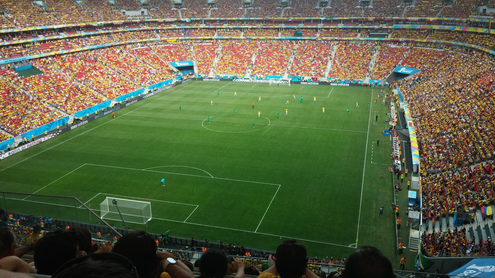
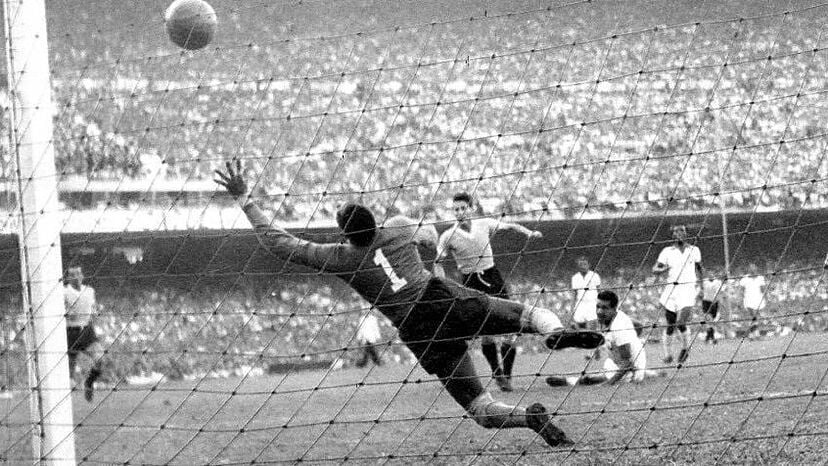

Copa do Mundo
História da Copa do Mundo
A Copa do Mundo da FIFA, o maior torneio de futebol do mundo, foi realizada pela primeira vez em 1930...



Com o passar dos anos, a Copa do Mundo cresceu em popularidade...
Hoje, a Copa do Mundo é um evento global que reúne bilhões de fãs em todo o mundo...